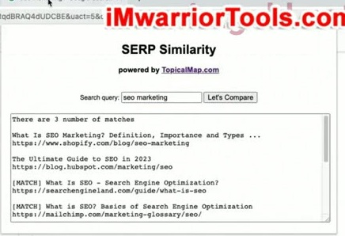

SERP Similarity Tool
1. So sánh SERP của những Keyword đang nghiên cứu
Yoyao giới thiệu một công cụ nhỏ, đơn giản để sử dụng khi nghiên cứu Keyword. Trong công việc này, có lúc bạn cần so sánh các Keyword và SERP của chúng: chúng có nằm trong cùng một cụm Keyword hay không, hoặc nếu xét hai cụm khác nhau thì mức độ trùng lặp giữa các kết quả là như thế nào.
Công cụ được giới thiệu có tên SERP Similarity. Để sử dụng, bạn thêm tiện ích vào trình duyệt theo hướng dẫn cài đặt. Trong phần minh họa, Yoyao đã thêm sẵn tiện ích vào danh sách Extension của mình. Sau khi thêm, một biểu tượng nhỏ mang dấu hiệu của TopicalMap xuất hiện trên trình duyệt. Đó là nơi ông mở công cụ để thực hiện những bước tiếp theo.

2. Vì sao đối chiếu hai trang Google bằng tay không thuận tiện
Khi tìm một Keyword trên Google, bạn không chỉ thấy danh sách các liên kết. Google bổ sung nhiều SERP features: bảng tri thức, các chủ đề liên quan và những khối thông tin khác. Nếu đồng thời bật Ubersuggest Chrome Extension hoặc Keywords Everywhere, còn có thêm các hộp dữ liệu, đặc biệt ở bên cạnh trang.
Vì vậy, việc tìm đúng các liên kết màu xanh, tức các kết quả tự nhiên muốn xem xét, bắt đầu trở nên khó khăn. Yoyao cũng nhắc đến cơ chế cuộn liên tục và câu hỏi: đâu mới là phần kết quả tương ứng với trang một?
Với cách so sánh thông thường, bạn phải mở hai cửa sổ khác nhau. Trong ví dụ, một cửa sổ tìm seo, cửa sổ còn lại tìm what is seo. Bạn đặt chúng cạnh nhau rồi xem các URL trùng nhau tới mức nào, qua đó xét xem hai Keyword có thuộc cùng một cụm hay không.

3. Dán Keyword thứ hai và chạy Let's Compare
Với SERP Similarity, khi đang ở trang kết quả cho Keyword thứ nhất, bạn lấy Keyword thứ hai, sao chép rồi dán vào ô của tiện ích. Sau đó, nhấn Let's Compare. Trong ví dụ đầu tiên, Yoyao đang ở kết quả cho seo và nhập what is seo để so sánh.
Bạn có thể thấy một tab tìm kiếm Google cho Keyword thứ hai được mở ở phía sau. Kết quả xuất hiện trong hộp của tiện ích. Thay vì tiếp tục đối chiếu bằng hai cửa sổ đặt cạnh nhau, bạn đọc dữ liệu được hiển thị trong hộp này.
Yoyao chỉ ra rằng đó là các tiêu đề trang và URL của những liên kết tự nhiên. Khi một kết quả khớp với trang tìm kiếm đang đối chiếu, tiện ích đánh dấu kết quả ấy. Phần đầu danh sách cũng cung cấp tổng số kết quả trùng khớp, giúp bạn nhìn thấy kết quả so sánh.
Ở lần so sánh đầu tiên, tổng số kết quả trùng nhau là 4. Con số này xuất hiện trong hộp kết quả và trong dữ liệu được dán sang tài liệu ở bước tiếp theo.

4. Kết quả được sao chép để sử dụng trong bảng tính hoặc tài liệu
Một điểm thuận tiện là kết quả đã được tự động sao chép vào clipboard. Bạn có thể mở bảng tính hoặc tài liệu văn bản của mình và dán nội dung vào đó. Trong phần minh họa, Yoyao chuyển sang một cửa sổ tài liệu và dán danh sách; các kết quả xuất hiện ở đó.
Danh sách này cho phép xem các tiêu đề trang cạnh nhau để đưa ra gợi ý hoặc Brainstorm ý tưởng. Bạn cũng có thể lấy các URL để tiếp tục sử dụng nếu muốn. Phần minh họa do đó không chỉ dừng ở con số kết quả khớp: cả tiêu đề và địa chỉ của các trang cũng có thể được mang sang tài liệu làm việc.
Yoyao nhấn mạnh tính đơn giản của công cụ. Nó không có gì hào nhoáng; mục đích là hoàn thành việc so sánh đang cần làm. Sau ví dụ đầu, ông chuyển sang thử một Keyword khác.

5. Thử tiếp seo marketing và đọc ba kết quả trùng nhau
Lần tiếp theo, Yoyao nhập seo marketing. Bạn có thể thấy quá trình chạy ở phía sau. Ông lưu ý rằng tốc độ có kết quả phụ thuộc vào kết nối Internet và tốc độ tải của tab tìm kiếm đó.
Trong lần minh họa này, tiện ích trả về ba kết quả trùng khớp. Các trang được ông chỉ ra đến từ Search Engine Land, Mailchimp và WordStream. Ông xem lần lượt các kết quả và vị trí của chúng trong trang tìm kiếm, bao gồm việc tìm kết quả của Mailchimp ở phần phía dưới.
Bên cạnh các trang khớp, kết quả tìm cho seo marketing còn có những bài viết riêng về chủ đề Marketing và SEO. Ví dụ đầu danh sách trong hộp là bài của Shopify về SEO Marketing; bên dưới còn có các bài khác. Vì vậy, bạn vẫn cần xem tiêu đề và URL cụ thể, không chỉ đọc con số ba kết quả khớp rồi bỏ qua phần nội dung bên dưới.

6. Quan sát URL, tiêu đề trang và cấu trúc nội dung
Điểm Yoyao muốn người học chú ý là cách các website dùng và cấu trúc trang của họ. Khi so sánh các Keyword, bạn xem các URL và tiêu đề trang, quan sát những bài có nội dung Marketing cụ thể cho SEO bên cạnh những bài giới thiệu SEO nói chung.
Hộp so sánh giữ lại các thông tin đó để bạn đọc. Một số kết quả được đánh dấu MATCH, số khác không có dấu này. Kết quả trong lần tìm thứ hai vì thế vừa cho thấy những trang xuất hiện ở cả hai phía, vừa cho thấy các trang còn lại để tiếp tục xem xét.
Đó là lý do ông trực tiếp cuộn, nhìn các trang và quay lại danh sách. Việc xem xét cách dùng tiêu đề và cấu trúc URL là một phần của thao tác so sánh, chứ không chỉ là nhập Keyword rồi lấy một chỉ số tổng.
7. Đóng popup không xóa dữ liệu đã sao chép
Khi nhấp ra ngoài hộp popup, hộp của tiện ích biến mất. Tuy vậy, nội dung đã lưu trong clipboard vẫn còn. Bạn vẫn có thể đi tới tài liệu văn bản bất kỳ và dán kết quả, kể cả sau khi đóng hộp so sánh.
Yoyao nhắc lại rằng lần so sánh mới nhất có ba kết quả khớp. Nếu lúc này dán sang tài liệu, bạn sẽ nhận được nội dung của lần đó. Tuy nhiên, nếu đã sao chép một thứ khác thì dữ liệu clipboard trước đó sẽ được thay thế.
Bài hướng dẫn kết thúc ở điểm này. SERP Similarity được trình bày như một công cụ đơn giản để so sánh kết quả và chuyển danh sách sang nơi làm việc tiếp theo, không phải một công cụ có quy trình sử dụng cầu kỳ.
Tài liệu kèm bài: liên kết tiện ích
Tài liệu PDF kèm bài (04-SERP Similarity Tool.pdf) cung cấp đường dẫn cài đặt tiện ích mở rộng: https://go.topicalmap.com/serp-similarity Đó là đường dẫn được ghi trong tài liệu khóa học; phần hướng dẫn minh họa trang Chrome Web Store của tiện ích SERP Similarity by TopicalMap.com.
Đường dẫn tiện ích kèm bài
Nguồn và liên kết
- Topical Maps Unlocked 2.0 · SERP Similarity Tool, bài học video và tài liệu PDF cùng tên.
- Bài học chính thức